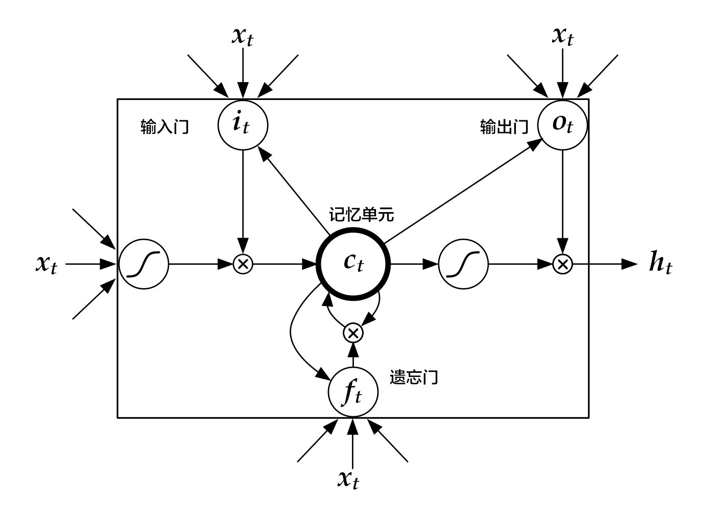

# 情感分析
本教程源代码目录在[book/understand_sentiment](https://github.com/PaddlePaddle/book/tree/develop/06.understand_sentiment)， 初次使用请参考PaddlePaddle[安装教程](https://github.com/PaddlePaddle/book/blob/develop/README.cn.md#运行这本书)，更多内容请参考本教程的[视频课堂](http://bit.baidu.com/course/detail/id/177.html)。
## 背景介绍
在自然语言处理中，情感分析一般是指判断一段文本所表达的情绪状态。其中，一段文本可以是一个句子，一个段落或一个文档。情绪状态可以是两类，如（正面，负面），（高兴，悲伤）；也可以是三类，如（积极，消极，中性）等等。情感分析的应用场景十分广泛，如把用户在购物网站（亚马逊、天猫、淘宝等）、旅游网站、电影评论网站上发表的评论分成正面评论和负面评论；或为了分析用户对于某一产品的整体使用感受，抓取产品的用户评论并进行情感分析等等。表格1展示了对电影评论进行情感分析的例子：
| 电影评论 | 类别 |
| -------- | ----- |
| 在冯小刚这几年的电影里，算最好的一部的了| 正面 |
| 很不好看，好像一个地方台的电视剧 | 负面 |
| 圆方镜头全程炫技，色调背景美则美矣，但剧情拖沓，口音不伦不类，一直努力却始终无法入戏| 负面|
|剧情四星。但是圆镜视角加上婺源的风景整个非常有中国写意山水画的感觉，看得实在太舒服了。。|正面|
表格 1 电影评论情感分析
在自然语言处理中，情感分析属于典型的**文本分类**问题，即把需要进行情感分析的文本划分为其所属类别。文本分类涉及文本表示和分类方法两个问题。在深度学习的方法出现之前，主流的文本表示方法为词袋模型BOW(bag of words)，话题模型等等；分类方法有SVM(support vector machine), LR(logistic regression)等等。
对于一段文本，BOW表示会忽略其词顺序、语法和句法，将这段文本仅仅看做是一个词集合，因此BOW方法并不能充分表示文本的语义信息。例如，句子“这部电影糟糕透了”和“一个乏味，空洞，没有内涵的作品”在情感分析中具有很高的语义相似度，但是它们的BOW表示的相似度为0。又如，句子“一个空洞，没有内涵的作品”和“一个不空洞而且有内涵的作品”的BOW相似度很高，但实际上它们的意思很不一样。
本章我们所要介绍的深度学习模型克服了BOW表示的上述缺陷，它在考虑词顺序的基础上把文本映射到低维度的语义空间，并且以端对端（end to end）的方式进行文本表示及分类，其性能相对于传统方法有显著的提升\[[1](#参考文献)\]。
## 模型概览
本章所使用的文本表示模型为卷积神经网络（Convolutional Neural Networks）和循环神经网络(Recurrent Neural Networks)及其扩展。下面依次介绍这几个模型。
### 文本卷积神经网络简介（CNN）
我们在[推荐系统](https://github.com/PaddlePaddle/book/tree/develop/05.recommender_system)一节介绍过应用于文本数据的卷积神经网络模型的计算过程，这里进行一个简单的回顾。
对卷积神经网络来说，首先使用卷积处理输入的词向量序列，产生一个特征图（feature map），对特征图采用时间维度上的最大池化（max pooling over time）操作得到此卷积核对应的整句话的特征，最后，将所有卷积核得到的特征拼接起来即为文本的定长向量表示，对于文本分类问题，将其连接至softmax即构建出完整的模型。在实际应用中，我们会使用多个卷积核来处理句子，窗口大小相同的卷积核堆叠起来形成一个矩阵，这样可以更高效的完成运算。另外，我们也可使用窗口大小不同的卷积核来处理句子，[推荐系统](https://github.com/PaddlePaddle/book/tree/develop/05.recommender_system)一节的图3作为示意画了四个卷积核，不同颜色表示不同大小的卷积核操作。
对于一般的短文本分类问题，上文所述的简单的文本卷积网络即可达到很高的正确率\[[1](#参考文献)\]。若想得到更抽象更高级的文本特征表示，可以构建深层文本卷积神经网络\[[2](#参考文献),[3](#参考文献)\]。
### 循环神经网络（RNN）
循环神经网络是一种能对序列数据进行精确建模的有力工具。实际上，循环神经网络的理论计算能力是图灵完备的\[[4](#参考文献)\]。自然语言是一种典型的序列数据（词序列），近年来，循环神经网络及其变体（如long short term memory\[[5](#参考文献)\]等）在自然语言处理的多个领域，如语言模型、句法解析、语义角色标注（或一般的序列标注）、语义表示、图文生成、对话、机器翻译等任务上均表现优异甚至成为目前效果最好的方法。

图1. 循环神经网络按时间展开的示意图
循环神经网络按时间展开后如图1所示：在第$t$时刻，网络读入第$t$个输入$x_t$（向量表示）及前一时刻隐层的状态值$h_{t-1}$（向量表示，$h_0$一般初始化为$0$向量），计算得出本时刻隐层的状态值$h_t$，重复这一步骤直至读完所有输入。如果将循环神经网络所表示的函数记为$f$，则其公式可表示为：
$$h_t=f(x_t,h_{t-1})=\sigma(W_{xh}x_t+W_{hh}h_{t-1}+b_h)$$
其中$W_{xh}$是输入到隐层的矩阵参数，$W_{hh}$是隐层到隐层的矩阵参数，$b_h$为隐层的偏置向量（bias）参数，$\sigma$为$sigmoid$函数。
在处理自然语言时，一般会先将词（one-hot表示）映射为其词向量（word embedding）表示，然后再作为循环神经网络每一时刻的输入$x_t$。此外，可以根据实际需要的不同在循环神经网络的隐层上连接其它层。如，可以把一个循环神经网络的隐层输出连接至下一个循环神经网络的输入构建深层（deep or stacked）循环神经网络，或者提取最后一个时刻的隐层状态作为句子表示进而使用分类模型等等。
### 长短期记忆网络（LSTM）
对于较长的序列数据，循环神经网络的训练过程中容易出现梯度消失或爆炸现象\[[6](#参考文献)\]。为了解决这一问题，Hochreiter S, Schmidhuber J. (1997)提出了LSTM(long short term memory\[[5](#参考文献)\])。
相比于简单的循环神经网络，LSTM增加了记忆单元$c$、输入门$i$、遗忘门$f$及输出门$o$。这些门及记忆单元组合起来大大提升了循环神经网络处理长序列数据的能力。若将基于LSTM的循环神经网络表示的函数记为$F$，则其公式为：
$$ h_t=F(x_t,h_{t-1})$$
$F$由下列公式组合而成\[[7](#参考文献)\]：
\begin{align}
i_t & = \sigma(W_{xi}x_t+W_{hi}h_{t-1}+W_{ci}c_{t-1}+b_i)\\\\
f_t & = \sigma(W_{xf}x_t+W_{hf}h_{t-1}+W_{cf}c_{t-1}+b_f)\\\\
c_t & = f_t\odot c_{t-1}+i_t\odot tanh(W_{xc}x_t+W_{hc}h_{t-1}+b_c)\\\\
o_t & = \sigma(W_{xo}x_t+W_{ho}h_{t-1}+W_{co}c_{t}+b_o)\\\\
h_t & = o_t\odot tanh(c_t)\\\\
\end{align}
其中，$i_t, f_t, c_t, o_t$分别表示输入门，遗忘门，记忆单元及输出门的向量值，带角标的$W$及$b$为模型参数，$tanh$为双曲正切函数，$\odot$表示逐元素（elementwise）的乘法操作。输入门控制着新输入进入记忆单元$c$的强度，遗忘门控制着记忆单元维持上一时刻值的强度，输出门控制着输出记忆单元的强度。三种门的计算方式类似，但有着完全不同的参数，它们各自以不同的方式控制着记忆单元$c$，如图2所示：

图2. 时刻$t$的LSTM [7]
LSTM通过给简单的循环神经网络增加记忆及控制门的方式，增强了其处理远距离依赖问题的能力。类似原理的改进还有Gated Recurrent Unit (GRU)\[[8](#参考文献)\]，其设计更为简洁一些。**这些改进虽然各有不同，但是它们的宏观描述却与简单的循环神经网络一样（如图2所示），即隐状态依据当前输入及前一时刻的隐状态来改变，不断地循环这一过程直至输入处理完毕：**
$$ h_t=Recrurent(x_t,h_{t-1})$$
其中，$Recrurent$可以表示简单的循环神经网络、GRU或LSTM。
### 栈式双向LSTM（Stacked Bidirectional LSTM）
对于正常顺序的循环神经网络，$h_t$包含了$t$时刻之前的输入信息，也就是上文信息。同样，为了得到下文信息，我们可以使用反方向（将输入逆序处理）的循环神经网络。结合构建深层循环神经网络的方法（深层神经网络往往能得到更抽象和高级的特征表示），我们可以通过构建更加强有力的基于LSTM的栈式双向循环神经网络\[[9](#参考文献)\]，来对时序数据进行建模。
如图3所示（以三层为例），奇数层LSTM正向，偶数层LSTM反向，高一层的LSTM使用低一层LSTM及之前所有层的信息作为输入，对最高层LSTM序列使用时间维度上的最大池化即可得到文本的定长向量表示（这一表示充分融合了文本的上下文信息，并且对文本进行了深层次抽象），最后我们将文本表示连接至softmax构建分类模型。

图3. 栈式双向LSTM用于文本分类
## 示例程序
### 数据集介绍
我们以[IMDB情感分析数据集](http://ai.stanford.edu/%7Eamaas/data/sentiment/)为例进行介绍。IMDB数据集的训练集和测试集分别包含25000个已标注过的电影评论。其中，负面评论的得分小于等于4，正面评论的得分大于等于7，满分10分。
```text
aclImdb
|- test
|-- neg
|-- pos
|- train
|-- neg
|-- pos
```
Paddle在`dataset/imdb.py`中提实现了imdb数据集的自动下载和读取，并提供了读取字典、训练数据、测试数据等API。
```python
import sys
import paddle.v2 as paddle
```
## 配置模型
在该示例中，我们实现了两种文本分类算法，分别基于[推荐系统](https://github.com/PaddlePaddle/book/tree/develop/05.recommender_system)一节介绍过的文本卷积神经网络，以及[栈式双向LSTM](#栈式双向LSTM（Stacked Bidirectional LSTM）)。
### 文本卷积神经网络
```python
def convolution_net(input_dim,
class_dim=2,
emb_dim=128,
hid_dim=128,
is_predict=False):
data = paddle.layer.data("word",
paddle.data_type.integer_value_sequence(input_dim))
emb = paddle.layer.embedding(input=data, size=emb_dim)
conv_3 = paddle.networks.sequence_conv_pool(
input=emb, context_len=3, hidden_size=hid_dim)
conv_4 = paddle.networks.sequence_conv_pool(
input=emb, context_len=4, hidden_size=hid_dim)
output = paddle.layer.fc(input=[conv_3, conv_4],
size=class_dim,
act=paddle.activation.Softmax())
if not is_predict:
lbl = paddle.layer.data("label", paddle.data_type.integer_value(2))
cost = paddle.layer.classification_cost(input=output, label=lbl)
return cost
else:
return output
```
网络的输入`input_dim`表示的是词典的大小，`class_dim`表示类别数。这里，我们使用[`sequence_conv_pool`](https://github.com/PaddlePaddle/Paddle/blob/develop/python/paddle/trainer_config_helpers/networks.py) API实现了卷积和池化操作。
### 栈式双向LSTM
```python
def stacked_lstm_net(input_dim,
class_dim=2,
emb_dim=128,
hid_dim=512,
stacked_num=3,
is_predict=False):
"""
A Wrapper for sentiment classification task.
This network uses bi-directional recurrent network,
consisting three LSTM layers. This configure is referred to
the paper as following url, but use fewer layrs.
http://www.aclweb.org/anthology/P15-1109
input_dim: here is word dictionary dimension.
class_dim: number of categories.
emb_dim: dimension of word embedding.
hid_dim: dimension of hidden layer.
stacked_num: number of stacked lstm-hidden layer.
"""
assert stacked_num % 2 == 1
fc_para_attr = paddle.attr.Param(learning_rate=1e-3)
lstm_para_attr = paddle.attr.Param(initial_std=0., learning_rate=1.)
para_attr = [fc_para_attr, lstm_para_attr]
bias_attr = paddle.attr.Param(initial_std=0., l2_rate=0.)
relu = paddle.activation.Relu()
linear = paddle.activation.Linear()
data = paddle.layer.data("word",
paddle.data_type.integer_value_sequence(input_dim))
emb = paddle.layer.embedding(input=data, size=emb_dim)
fc1 = paddle.layer.fc(input=emb,
size=hid_dim,
act=linear,
bias_attr=bias_attr)
lstm1 = paddle.layer.lstmemory(
input=fc1, act=relu, bias_attr=bias_attr)
inputs = [fc1, lstm1]
for i in range(2, stacked_num + 1):
fc = paddle.layer.fc(input=inputs,
size=hid_dim,
act=linear,
param_attr=para_attr,
bias_attr=bias_attr)
lstm = paddle.layer.lstmemory(
input=fc,
reverse=(i % 2) == 0,
act=relu,
bias_attr=bias_attr)
inputs = [fc, lstm]
fc_last = paddle.layer.pooling(input=inputs[0], pooling_type=paddle.pooling.Max())
lstm_last = paddle.layer.pooling(input=inputs[1], pooling_type=paddle.pooling.Max())
output = paddle.layer.fc(input=[fc_last, lstm_last],
size=class_dim,
act=paddle.activation.Softmax(),
bias_attr=bias_attr,
param_attr=para_attr)
if not is_predict:
lbl = paddle.layer.data("label", paddle.data_type.integer_value(2))
cost = paddle.layer.classification_cost(input=output, label=lbl)
return cost
else:
return output
```
网络的输入`stacked_num`表示的是LSTM的层数，需要是奇数，确保最高层LSTM正向。Paddle里面是通过一个fc和一个lstmemory来实现基于LSTM的循环神经网络。
## 训练模型
```python
if __name__ == '__main__':
# init
paddle.init(use_gpu=False)
```
启动paddle程序，use_gpu=False表示用CPU训练，如果系统支持GPU也可以修改成True使用GPU训练。
### 训练数据
使用Paddle提供的数据集`dataset.imdb`中的API来读取训练数据。
```python
print 'load dictionary...'
word_dict = paddle.dataset.imdb.word_dict()
dict_dim = len(word_dict)
class_dim = 2
```
加载数据字典，这里通过`word_dict()`API可以直接构造字典。`class_dim`是指样本类别数，该示例中样本只有正负两类。
```python
train_reader = paddle.batch(
paddle.reader.shuffle(
lambda: paddle.dataset.imdb.train(word_dict), buf_size=1000),
batch_size=100)
test_reader = paddle.batch(
lambda: paddle.dataset.imdb.test(word_dict),
batch_size=100)
```
这里，`dataset.imdb.train()`和`dataset.imdb.test()`分别是`dataset.imdb`中的训练数据和测试数据API。`train_reader`在训练时使用，意义是将读取的训练数据进行shuffle后，组成一个batch数据。同理，`test_reader`是在测试的时候使用，将读取的测试数据组成一个batch。
```python
feeding={'word': 0, 'label': 1}
```
`feeding`用来指定`train_reader`和`test_reader`返回的数据与模型配置中data_layer的对应关系。这里表示reader返回的第0列数据对应`word`层，第1列数据对应`label`层。
### 构造模型
```python
# Please choose the way to build the network
# by uncommenting the corresponding line.
cost = convolution_net(dict_dim, class_dim=class_dim)
# cost = stacked_lstm_net(dict_dim, class_dim=class_dim, stacked_num=3)
```
该示例中默认使用`convolution_net`网络，如果使用`stacked_lstm_net`网络，注释相应的行即可。其中cost是网络的优化目标，同时cost包含了整个网络的拓扑信息。
### 网络参数
```python
# create parameters
parameters = paddle.parameters.create(cost)
```
根据网络的拓扑构造网络参数。这里parameters是整个网络的参数集。
### 优化算法
```python
# create optimizer
adam_optimizer = paddle.optimizer.Adam(
learning_rate=2e-3,
regularization=paddle.optimizer.L2Regularization(rate=8e-4),
model_average=paddle.optimizer.ModelAverage(average_window=0.5))
```
Paddle中提供了一系列优化算法的API，这里使用Adam优化算法。
### 训练
可以通过`paddle.trainer.SGD`构造一个sgd trainer，并调用`trainer.train`来训练模型。另外，通过给train函数传递一个`event_handler`来获取每个batch和每个pass结束的状态。
```python
# End batch and end pass event handler
def event_handler(event):
if isinstance(event, paddle.event.EndIteration):
if event.batch_id % 100 == 0:
print "\nPass %d, Batch %d, Cost %f, %s" % (
event.pass_id, event.batch_id, event.cost, event.metrics)
else:
sys.stdout.write('.')
sys.stdout.flush()
if isinstance(event, paddle.event.EndPass):
with open('./params_pass_%d.tar' % event.pass_id, 'w') as f:
trainer.save_parameter_to_tar(f)
result = trainer.test(reader=test_reader, feeding=feeding)
print "\nTest with Pass %d, %s" % (event.pass_id, result.metrics)
```
比如，构造如下一个`event_handler`可以在每100个batch结束后输出cost和error；在每个pass结束后调用`trainer.test`计算一遍测试集并获得当前模型在测试集上的error。
```python
from paddle.v2.plot import Ploter
train_title = "Train cost"
cost_ploter = Ploter(train_title)
step = 0
def event_handler_plot(event):
global step
if isinstance(event, paddle.event.EndIteration):
cost_ploter.append(train_title, step, event.cost)
cost_ploter.plot()
step += 1
```
或者构造一个`event_handler_plot`画出cost曲线。
```python
# create trainer
trainer = paddle.trainer.SGD(cost=cost,
parameters=parameters,
update_equation=adam_optimizer)
trainer.train(
reader=train_reader,
event_handler=event_handler,
feeding=feeding,
num_passes=2)
```
程序运行之后的输出如下。
```text
Pass 0, Batch 0, Cost 0.693721, {'classification_error_evaluator': 0.5546875}
...................................................................................................
Pass 0, Batch 100, Cost 0.294321, {'classification_error_evaluator': 0.1015625}
...............................................................................................
Test with Pass 0, {'classification_error_evaluator': 0.11432000249624252}
```
## 应用模型
可以使用训练好的模型对电影评论进行分类，下面程序展示了如何使用`paddle.infer`接口进行推断。
```python
import numpy as np
# Movie Reviews, from imdb test
reviews = [
'Read the book, forget the movie!',
'This is a great movie.'
]
reviews = [c.split() for c in reviews]
UNK = word_dict['
']
input = []
for c in reviews:
input.append([[word_dict.get(words, UNK) for words in c]])
# 0 stands for positive sample, 1 stands for negative sample
label = {0:'pos', 1:'neg'}
# Use the network used by trainer
out = convolution_net(dict_dim, class_dim=class_dim, is_predict=True)
# out = stacked_lstm_net(dict_dim, class_dim=class_dim, stacked_num=3, is_predict=True)
probs = paddle.infer(output_layer=out, parameters=parameters, input=input)
labs = np.argsort(-probs)
for idx, lab in enumerate(labs):
print idx, "predicting probability is", probs[idx], "label is", label[lab[0]]
```
## 总结
本章我们以情感分析为例，介绍了使用深度学习的方法进行端对端的短文本分类，并且使用PaddlePaddle完成了全部相关实验。同时，我们简要介绍了两种文本处理模型：卷积神经网络和循环神经网络。在后续的章节中我们会看到这两种基本的深度学习模型在其它任务上的应用。
## 参考文献
1. Kim Y. [Convolutional neural networks for sentence classification](http://arxiv.org/pdf/1408.5882)[J]. arXiv preprint arXiv:1408.5882, 2014.
2. Kalchbrenner N, Grefenstette E, Blunsom P. [A convolutional neural network for modelling sentences](http://arxiv.org/pdf/1404.2188.pdf?utm_medium=App.net&utm_source=PourOver)[J]. arXiv preprint arXiv:1404.2188, 2014.
3. Yann N. Dauphin, et al. [Language Modeling with Gated Convolutional Networks](https://arxiv.org/pdf/1612.08083v1.pdf)[J] arXiv preprint arXiv:1612.08083, 2016.
4. Siegelmann H T, Sontag E D. [On the computational power of neural nets](http://research.cs.queensu.ca/home/akl/cisc879/papers/SELECTED_PAPERS_FROM_VARIOUS_SOURCES/05070215382317071.pdf)[C]//Proceedings of the fifth annual workshop on Computational learning theory. ACM, 1992: 440-449.
5. Hochreiter S, Schmidhuber J. [Long short-term memory](http://web.eecs.utk.edu/~itamar/courses/ECE-692/Bobby_paper1.pdf)[J]. Neural computation, 1997, 9(8): 1735-1780.
6. Bengio Y, Simard P, Frasconi P. [Learning long-term dependencies with gradient descent is difficult](http://www-dsi.ing.unifi.it/~paolo/ps/tnn-94-gradient.pdf)[J]. IEEE transactions on neural networks, 1994, 5(2): 157-166.
7. Graves A. [Generating sequences with recurrent neural networks](http://arxiv.org/pdf/1308.0850)[J]. arXiv preprint arXiv:1308.0850, 2013.
8. Cho K, Van Merriënboer B, Gulcehre C, et al. [Learning phrase representations using RNN encoder-decoder for statistical machine translation](http://arxiv.org/pdf/1406.1078)[J]. arXiv preprint arXiv:1406.1078, 2014.
9. Zhou J, Xu W. [End-to-end learning of semantic role labeling using recurrent neural networks](http://www.aclweb.org/anthology/P/P15/P15-1109.pdf)[C]//Proceedings of the Annual Meeting of the Association for Computational Linguistics. 2015.

本教程 由 PaddlePaddle 创作，采用 知识共享 署名-相同方式共享 4.0 国际 许可协议进行许可。